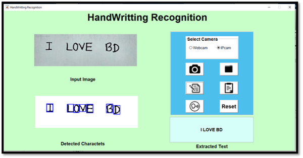

Interactive Media Design Laboratory
Division of Information Science
Graduate School of Advanced Science and Technology
Nara Institute of Science and Technology, Japan
Edu-email: rahman.md_mustafizur.rp6@naist.ac.jp
Personal-email: mustafizur.cd@gmail.com
Resume Google Scholar

About Me
I'm a Master's student at the Nara Institute of Science and Technology, Japan, with a background in Information Science.
My work focuses on leveraging AI, AR, and VR technologies to enhance physical therapy, medical training, and rehabilitation.
I have a passion for developing innovative solutions that combine software engineering, computer vision, and interactive media design.
I love pixels and believe the power of simple intuition and creative thinking.
News
- [June 2025] During my research internship at the University of Trento, our paper titled "Robotic Collaborative Walker with Impedance Control and Augmented Reality for Assisted Walking and User Empowerment" was accepted to IEEE MetroXRAINE 2025.
- [March ~ May 2025] Successfully completed a research internship at the University of Trento, Italy, focusing on mixed reality-based rehabilitation. Research Article
- [January 2025] Our work on "Experience Augmentation in Physical Therapy by Simulating Patient-Specific Walking Motions" was published at APMAR2024.
- [October 2024] Our work on "Experience Augmentation in Physical Therapy by Simulating Patient-Specific Walking Motions" was accepted to APMAR2024.
Work Experience
|
University of Trento
| Research Intern March 2025 ~ May 2025 | Via Calepina, 14, 38122 Trento TN, Italy • Completed a research internship under the supervision of Professor Mariolino De Cecco and Alessandro Luchetti, PhD at MiroLab , focusing on the development of Mixed Reality systems for industrial and rehabilitation applications. • Developed a mixed-reality based serious game on Meta Quest 3, integrating a collaborative robotic walker with a spatially aware AR interface. • Designed real-time therapist-patient interactions within a co-located shared space using Photon Fusion for networking and MQTT for robot communication. • Built a marker-based path drawing system with avatar navigation, path validation, and real-time feedback (e.g., avatar responds when the patient deviates from the path). • Enabled gamified therapy through collectible items along the path, with real-time path plotting to visualize planned vs. actual movement. • Implemented a content placement system to simulate virtual terrains (lava, ice, sand) using ray-based interaction and Unity's MRUK scene understanding. • Validated the system through co-location between therapist and patient HMDs, synchronized with an external robotic walker to support adaptive gait rehabilitation. *** Featured in a research article published on the University of Trento website: Research News - New frontiers of augmented reality: shared reality between patient and therapist |
|
|
Kyoto University
| Research Collaborator March 2024 ~ Present | 54 Kawahara-cho, Shogoin, Sakyo-ku, Kyoto 606-8507, JAPAN • Collaborating with professors Goshiro Yamamoto, Chang Liu, and Hiroaki Ueshima from the Clinical Research Center for Medical Equipment Development. • Engaged in research titled "Experience Augmentation in Physical Therapy by Simulating Patient-Specific Walking Motions," enhancing rehabilitation outcomes through advanced simulation techniques. • Involved in multidisciplinary projects focused on optimizing rehabilitation practices in physical therapy settings. • Integrating generative AI and LLMs, such as BERT, to improve therapeutic interventions and enhance patient communication. • Leveraging Augmented Reality (AR), Virtual Reality (VR), and Mixed Reality (MR) to develop interactive tools that facilitate immersive learning experiences for physical therapists by simulating a wide range of impaired gait patterns. |
|
|
Researcher | Master's
Student at the Interactive Media Design
Lab., NAIST October 2023 ~ Present | 8916-5 Takayama-cho, Ikoma, Nara 630-0192, JAPAN • Currently engaged in a research project titled "Experience Augmentation in Physical Therapy by Simulating Patient-Specific Walking Motions," utilizing the HumanML3D dataset. • Supervised by esteemed lab supervisor Professor Hirokazu Kato and other Assistant Professor Taishi Sawabe and Isidro Butaslac • Focused on developing innovative solutions that enhance physical therapy through the simulation of individualized walking motions. • Contributing to cutting-edge research aimed at improving therapeutic outcomes for patients in rehabilitation settings by providing immersive 3D motion simulations. • Leveraging expertise in Augmented Reality (AR), Virtual Reality (VR), and Mixed Reality (MR) to create dynamic, patient-specific motion representations. • Applying generative AI techniques and large language models (LLMs), including BERT, to analyze and generate impaired human motion data for improved therapeutic applications. |
|
|
Talent Pro | Team
Lead - Software Quality Assurance Engineer June 2022 ~ August 2023 | 109 Masjid Road, Old DOHS, Banani, Dhaka 1206, Bangladesh. • Led the QA efforts and managed testing processes for various projects at TalentPro. • Created and executed test plans, test cases, and designed automation test scripts. • Conducted test execution result analysis. • Specialized in Appium, Selenium WebDriver, TestNG, and Cucumber within Java-based automation frameworks (TDD, BDD). • Managed API testing, performance testing, security testing, and database testing using REST Assured and GraphQL. |
|
|
RealEzy (Singapore) |
Software Quality Assurance Engineer June 2022 ~ August 2023 | Singapore-based project under TalentPro • Hired by RealEzy, a leading Singapore real estate platform, for a dedicated QA role on their project. • Responsible for automating test processes, designing test plans, and ensuring software quality through manual and automated testing. • Worked extensively with Appium, Selenium, and Java-based automation frameworks to streamline testing efforts for RealEzy's platform. • Performed API, performance, and security testing using REST Assured, ensuring optimal functionality for the platform. |
|
|
Fanfare (Bangladesh) |
Team Lead - Software Quality Assurance Engineer March 2023 ~ May 2023 | Bangladesh-based project under TalentPro • Assigned to Fanfare, a social commerce platform, to ensure quality in their software releases for three months. • Developed and executed test plans, test cases, and automated testing scripts to support the platform's quality assurance. • Utilized Appium, Selenium, and Java-based automation frameworks to optimize test cycles. • Conducted API and performance testing using REST Assured, ensuring smooth integration of new features and updates. |
|
Research
| Robotic Collaborative Walker with Impedance Control and Augmented Reality for Assisted Walking and User Empowerment |
|
Mariolino De Cecco*,
Giandomenico Nollo,
Alessandro Luchetti,
Matteo Bonetto,
Damiano Fruet,
Muhammad Irtaza, Md Mustafizur Rahman*, Ryosuke Shigeto, Isidro Butaslac |
|
We present an immersive mixed reality rehabilitation system that supports therapist-guided gait training using a collaborative robotic walker. The system allows therapists to draw custom walking paths directly in the physical environment using Meta Quest 3, enhanced with scene understanding and co-located shared space. A virtual avatar (dog, cat, penguin, or deer) provides real-time feedback and motivational cues as patients follow the prescribed path. The integration of Photon Fusion networking and MQTT-based robot communication enables synchronized interaction between therapist, patient, and robot in a unified space. Through features like terrain-aware content placement (lava, ice, sand) and gamified item collection, the system offers a personalized, adaptive rehabilitation experience. |
|
Development Overview: This system was developed using Unity3D (Meta Quest 3) with extensive use of C# for real-time interaction logic. Photon Fusion was used for multiplayer networking, and M2MQTT (Unity) handled bidirectional communication with the robotic walker. MR Utility Kit (MRUK) enabled environment scanning and spatial anchor alignment. Gamification features and path tracking were implemented using LineRenderer and real-time MQTT telemetry. The entire system was tested and deployed in a physical therapy simulation with real robot coordination and therapist-patient role synchronization. |
| [ Accepted to IEEE MetroXRAINE 2025] [ Demo Video] |
 |
| Experience Augmentation in Physical Therapy by Simulating Patient-Specific Walking Motions |
| Md Mustafizur Rahman, Goshiro Yamamoto, Chang Liu, Hiroaki Ueshima, Isidro Butaslac, Taishi Sawabe, Hirokazu Kato |
|
We propose a novel system for physical therapy training that enhances understanding of impaired gait patterns using the HumanML3D dataset. Our approach combines a classification model for predicting motion length from textual descriptions and a temporal variational autoencoder for generating diverse 3D motion sequences. By utilizing residual vector quantization and a Masked Transformer, the system ensures precise and consistent motion generation. This interactive tool allows therapists to simulate patient-specific movements in mixed reality environments, transforming therapeutic training and personalizing rehabilitation strategies. |
|
Development Overview: In this study, I utilized Python and C# to develop the application, leveraging Unity3D as my development platform. I incorporated FastAPI for backend services and utilized the Blender Python API for the motion retargeting process to map the generated motion onto the target 3D model's skeleton. The development environment was set up in PyCharm, and the application was deployed on the Meta Quest 3 for an immersive experience. |
|
Acknowledgments: This work was supported by JSPS KAKENHI Grant Number JP23K24888. |
| [ Paper] |
 |
| Virtual Reality Based Medical Training Simulator and Robotic Operation System |
| Md Mustafizur Rahman, Md Fatin Ishmam, Md. Tanvir Hossain, Md. Emdadul Haque, |
| This study introduces a virtual reality (VR) medical training simulator to enhance learning in medical education. Using 3D models, students can interactively explore human anatomy and physiology, perform surgical operations, and repeatedly practice without the constraints of real human bodies. Additionally, the system connects to a robotic platform, enabling skilled surgeons to perform remote surgeries using VR to control robotic tools. This reduces the need for patients in remote areas to travel to cities for specialized care, offering an innovative solution for medical training and remote surgery. |
|
Development Overview: This project leveraged C# for application development and C++ for the communication bridge via Firebase. The Unity3D engine was employed for UI and room design, with real-time video transmission over TCP/IP enabling surgeon monitoring in VR. Photon Network facilitated multi-user collaboration, and the robotic system was controlled using Arduino Mega2560, executing commands transmitted as JSON for robotic actions. |
| [ Paper] |
Project
 |
| ARPoseTrainer: Real-Time Feedback for Motor Rehabilitation Using Augmented Reality |
| Md Mustafizur Rahman |
|
The depicted system integrates Augmented Reality (AR) to support motor rehabilitation by enabling real-time motion analysis and feedback. A depth sensor(Azure Kinect) captures the patient's movement data, which is processed on a PC to generate skeletal tracking visualizations. These data are transmitted via UDP/IP to an AR device, such as a HoloLens, allowing therapists and patients to interact with virtual avatars in real time. The system offers immediate feedback on pose accuracy and performance scores, enhancing rehabilitation by providing immersive, precise guidance and monitoring for motor skill improvement. |
|
Development Overview: This system utilizes Augmented Reality (AR) for motor rehabilitation, providing real-time motion analysis and feedback. Azure Kinect captures patient movements, processed in C# to create skeletal tracking visualizations transmitted via UDP/IP to devices like the HoloLens. Instant feedback on pose accuracy and performance metrics is provided, while a Laravel REST API in PHP and a MySQL database enable score storage and personalized performance data access through a web interface. |
| [ video | code] |
|  |
| Handwrite AI: Smart OCR for Handwritten Notes to Digital Text |
| Md Mustafizur Rahman |
|
Handwriting to Text OCR application converting scanned handwritten notes into digital text which is available for edits, search and stored in any platform. The application uses advanced Optical Character Recognition (OCR) techniques to accurately recognize and convert handwritten text from images or scanned documents into editable digital text. It can handle various handwriting styles, making it a versatile tool for students, professionals, and anyone who needs to digitize handwritten content. Developed Year: 2019 |
| Signature Authentication System: Improving Accuracy with AI and Biometrics |
| Md Mustafizur Rahman |
|
Recognition and verification of given signature by using image Processing and Machine Learning. The system uses a combination of image processing techniques and machine learning algorithms to accurately recognize and verify signatures, ensuring the authenticity of documents and preventing forgery. Developed Year: 2019 |
Awards and Achievements
| Year | Award/Recognition | Title | Country |
|---|---|---|---|
| March-May, 2025 | Erasmus+ ICM |
Erasmus International Credit Mobility (ICM) Exchange Programme at University of Trento | Italy |
| 2023-2025 | Monbukagakusho (MEXT) Scholarship | MEXT Scholarship Master's student at NAIST | Japan |
| 2023 | Tech Genius Awards | Recognized for delivering the Best Performance as a Team Leader at TalentPro | Bangladesh |
| 2019 | 1st Runner-Up at the IEEE RAS Hackathon | BUET Winter School IEEE RAS Hackathon | Bangladesh |
| 2019 | 1st Runner-Up at the Robotics Exhibition and Competition | LICT-JOB Fair Project Showcasing | Bangladesh |
Training Courses
| Year | Course Title | Coursework |
|---|---|---|
| MAY - JUNE, 2019 | AR, VR, MR Technology Course | What is virtual reality (VR), Augmented reality (AR), and mixed reality (MR) technologies, devices, principles of operation, applications, and services in AR, VR, and MR systems. Practical display and use (Oculus Rift CV1/S, Oculus Quest, MS HoloLens, Samsung Gear VR, Google Cardboard, etc.) |
| JANUARY-FEBRUARY, 2020 | Skill Development for Arduino & Robotics | Arduino Basic to Pro, I2C, LCD, OLED, 7-Segment, Dot matrix display, DC, LDR and MQ-135 Gas sensor, RTC and PIR sensor, RFID reader, 4x4 Keypad and IR sensor, UART and GPS, GSM Module, PWM and Motor Driver, Humidity and Temperature sensor, Ultrasonic sensor, Node MCU, Wi-Fi. |
| FEBRUARY – APRIL, 2019 | April Mobile Game & Application Course | Effective and Creative Mobile Game Design, Production, and Delivery. |